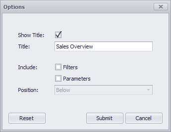

Print Preview
This document describes the Print Preview window, which displays the dashboard/dashboard item as it will appear on paper.

Specific Options
In the Print Preview, you can change the orientation and size of the printed page, specify the margins, scale the document, etc. To learn more, see Print Preview for WinForms.
You can also customize printing options specific to a dashboard/dashboard item. To do this, click the Options button in the Print group. When previewing the dashboard, the following Options dialog will be invoked.

- Show Title - Specifies whether or not to show the dashboard title/dashboard item caption as the printed document title.
- Title - Specifies the title of the printed document.
- Include | Filters - Allows you to include master filter values to the printed document.
- Include | Parameters - Allows you to include parameter values to the printed document.
- Position - Specifies the position of the master filter and parameter values in the printed document. You can select between Below and Separate Page.
This dialog can contain different options, depending on the dashboard item. To learn more, see the documentation for the required dashboard item.